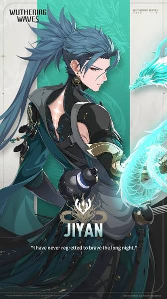
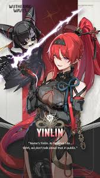
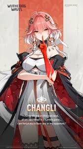

01menjelajah
01menjelajah
dunia terbuka / resonansi
Arsip
Resonansi

aero
★★★★★
LIVE
ARSIP RESONANSI
Jiyan
komandan / aero
Komandan yang tenang dengan pusaran angin untuk membuka jalur perjalanan.

elektro
★★★★★
LIVE
ARSIP RESONANSI
Yinlin
konduktor / elektro
Membaca medan dengan presisi dan mengarahkan gema ke sasaran berikutnya.

fusion
★★★★★
LIVE
ARSIP RESONANSI
Changli
penjaga / fusion
Api yang terukur, langkah yang rapi, dan keputusan yang selalu lebih dulu.